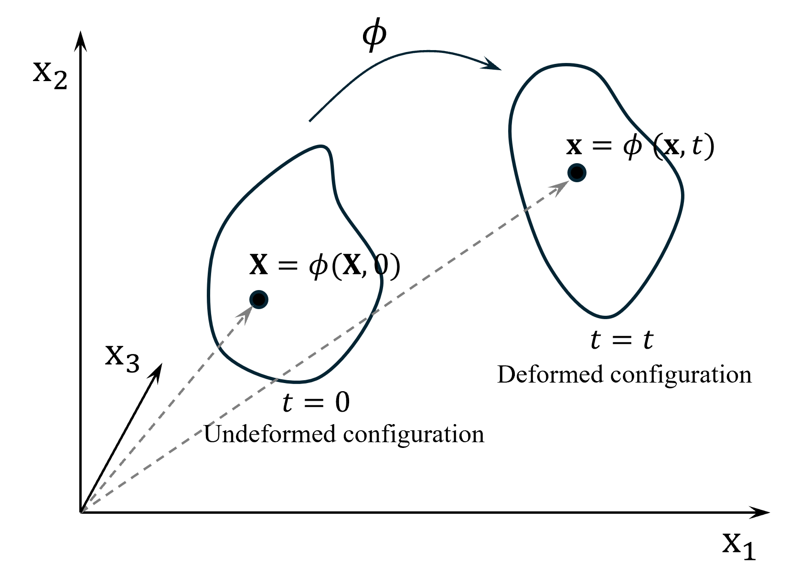

Description of deformation#
Continuum mechanics views a body \(\mathcal{B}\) as a continuous medium made up of material points, with each point having distinct mechanical characteristics. When describing the position of these points, we use two different coordinate systems. In the body’s original, undeformed state, we locate points using the material (or Lagrangian) coordinate vector \(\mathbf{X}\). After deformation occurs, we describe the new positions using the spatial (or Eulerian) coordinate vector \(\mathbf{x}\).

Motion of a deformable body in continuum mechanicsTo mathematically describe how a body moves and deforms over time, we use a mapping function \(\boldsymbol{\phi}(\mathbf{X}, t)\). This function establishes the relationship between where a point started (\(\mathbf{X}\)) and where it ends up (\(\mathbf{x}\)) at any given time:
The motion of any material point can be described through displacement, velocity, and acceleration. First, the displacement vector \(\mathbf{u}(\mathbf{X}, t)\) measures how far a point has moved from its initial position. We can calculate this as the difference between its current and original positions:
Velocity \(\mathbf{v}(\mathbf{X}, t)\) represents how quickly a point’s position changes with time. Mathematically, it’s expressed as the time derivative of the mapping function:
This is Lagrangian velocity field. Note that while we could describe velocity from both Lagrangian and Eulerian perspectives, we focus on the Lagrangian description since it aligns with the Material Point Method’s (MPM) approach.
Finally, acceleration \(\mathbf{a}(\mathbf{X}, t)\) describes the rate of change of velocity, or equivalently, the second time derivative of position:
Reference#
Nguyen, V. P., de Vaucorbeil, A., & Bordas, S. (2023). The Material Point Method: Theory, Implementations, and Applications. Springer. https://doi.org/10.1007/978-3-031-24070-6
https://www.geoelements.org/LearnMPM/mpm.html#motion-of-deformable-body